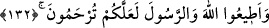
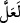
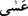
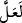

muamelelerini yapmamak sûretiyle “kâfirler için hazırlanmış olan ateşten sakının.”
Bu âyette, cehennemin esas itibariyle kâfirler için hazırlandığına; âsî mü’minler için
ise ârızî olduğuna dikkat çekilmektedir.
Ebû Hanife (rh.a.) şöyle diyor: Bu âyet-i kerîme, Kur’ân’daki en dehşetengiz âyettir.
Çünkü Allah Teâlâ, bu âyette haram kıldığı şeylerden korunmazlarsa, mü’minleri;
kâfirler için hazırlanmış ateşe atmakla tehdit ediyor.
132. Allah’a ve Rasûlü’ne itaat edin ki rahmete kavuşturulasınız.
Size emredip yasakladığı her husûsta Allah’a ve Allah’ın emir ve yasaklarını size
tebliğ eden peygambere O’nun rahmetini umarak itâat edin ki, size merhamet edilsin.
Bu gibi yerlerde kullanılan (
) ve (
) kelimeleri kendilerine haber verilen
konulara ulaşmanın ne kadar değerli olduğunu gösterirler.
Kâşânî şöyle diyor: “Âyet-i kerîmede, ribâ konusundaki tehdidin ne kadar şiddetli
olduğu zeki birine gizli kalmaz. Çünkü ribâdan korunup uzak duranların kurtuluşa
erebileceğini belirtmek için (
) “belki” getirilmiştir. Kurtuluşun ümid edilebilmesi
ve mümkün olabilmesinin, ribâdan uzak durmaya bağlanması, mü’min olsalar da
ribâdan uzak durmadıkça kurtuluşa ermelerinin imkânsız olmasını gerektirir. Sonra
Allah Teâlâ, mü’min oldukları halde, ribâ alanları kâfirler için hazırlanan ateşle tehdit
etmiştir.
Kâfirlerin azabını mü’minlerin başına getiren bu ribâ musîbeti, ne kadar büyük bir
belâdır? Bu tehdit de ribâ yiyenlere yöneltilmiş ne galiz bir tehdittir. Cenâb-ı Hak daha
sonra, ribâ yiyenlerin mâsiyete iyice dalmış olduklarına ve kendilerinden tâat sudûrunun
artık mümkün olmadığına târizde bulunarak bu ağır ifadeleri, Allah ve Rasûlü’ne itâatı
da emrederek devam ettiriyor. Sonra da böyle bir isyanın içinde iken Allah’ın rahmetini
ümid edemeyeceklerini bildirerek mü’minlerin ümitli olabilmeleri için Allah ve
Rasûlü’ne itâat etmelerinin şart olduğunu ifade ediyor.
Netice olarak bu ribâ günahı, hem ribâ yiyip hem de Allah’ın rahmetine ulaşmak
imkânsız olduğu için Allah’ın rahmetinden ümid kesmeyi gerektirmektedir. Bakınız âyet
ribâ yiyenleri tehditte derece derece sertleşmekte, neticede dûçâr olacakları ceza ve
azapta kâfirlerle bir tutmaktadır. el-Kâşânî’nin ibâresiyle alınan bu tefsir burada
bitiyor.
Hz. Peygamber (s.a.) şöyle buyurmaktadır: “Allah Teâlâ, ribâ alanı, vereni,
şâhitliğini yapanı, muamelesini yazanı ve ribâyı helâl göreni lânetlemiştir.”[109]
Ribâ: Mal üzerine, Allah’ın yasakladığı şekilde bir fazlalık istemektir. “Ribâ-i nesîe”
ve “ribâ-i fazl” diye iki kısımdır.
Ribâi nesîe: Yukarıda geçtiği üzere, câhiliye Arapları nezdinde bilinen ve uygulanan